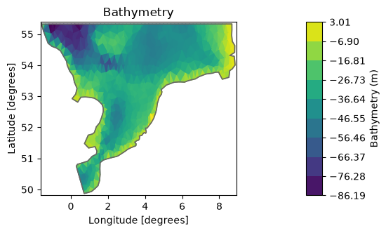
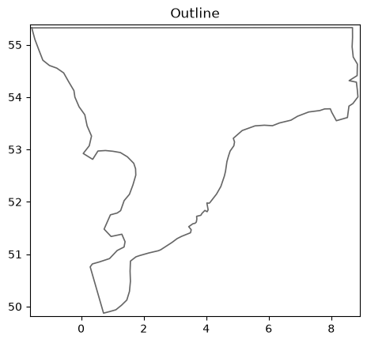
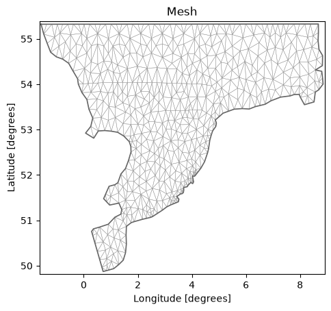
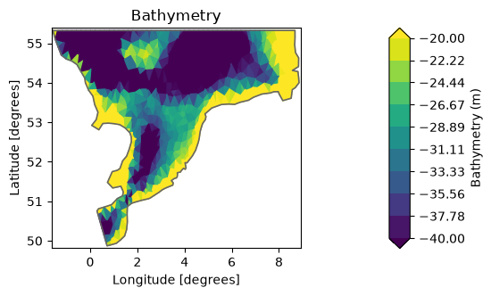
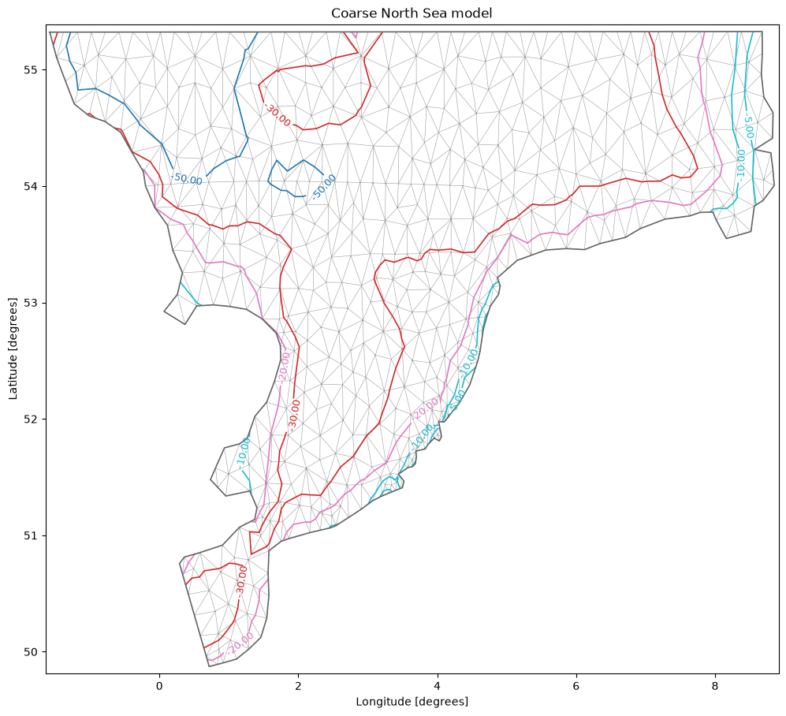
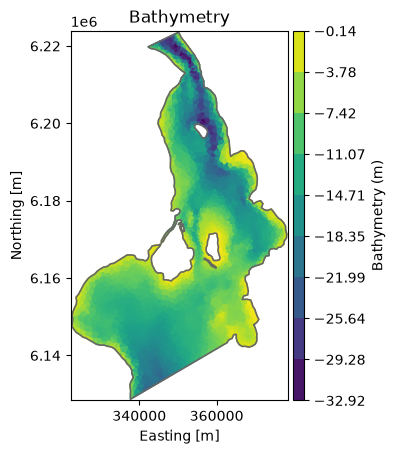
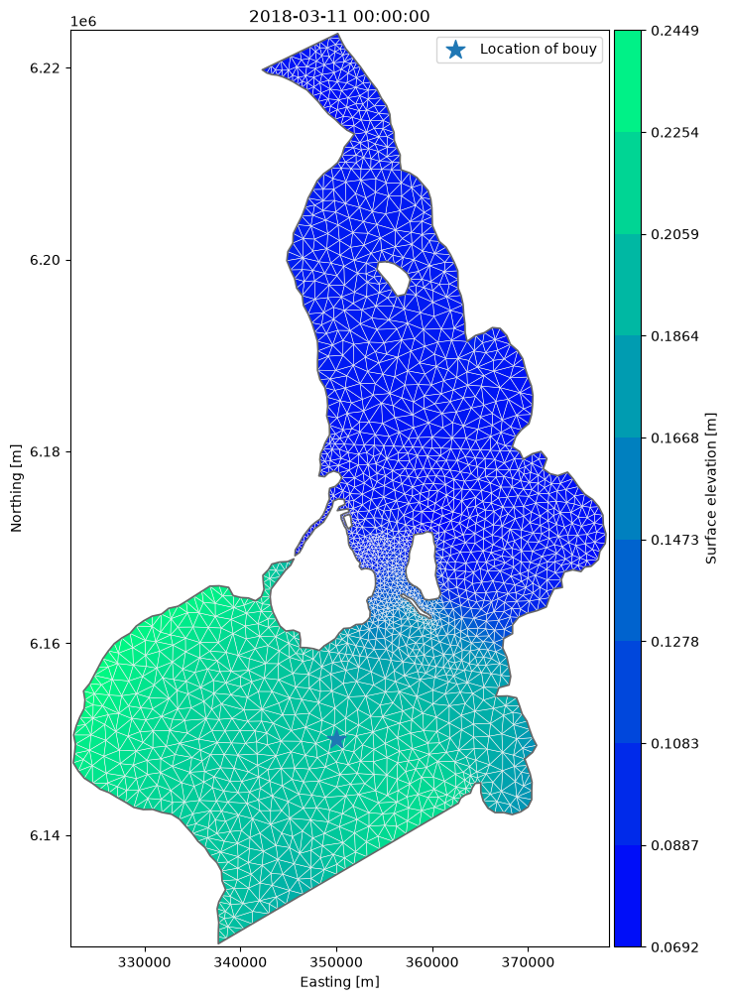
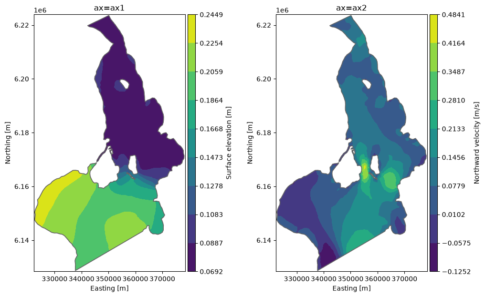

Output Visualisation#
Visualizing output is an important part of any modelling project. MIKE IO has some possibilites for visualizing output from Dfsu and Mesh files, which we will explore here.
import matplotlib.pyplot as plt
import mikeio
Mesh#
A mesh contains information about the mesh geometry.
msh = mikeio.open("data/southern_north_sea.mesh")
msh
<Mesh>
number of nodes: 570
number of elements: 958
projection: LONG/LAT
The default is to plot the elements and color them according to the bathymetry.
msh.plot();

msh.plot.outline();

msh.plot.mesh();

Maybe we would like to higlight the bathymetric variations in some range, in this case in the -40, -20m range.
msh.plot(vmin=-40, vmax=-20);

There are other options as well, such as explicit specification of which contour lines to show or choosing a specific colormap (matplotlib colormaps)
msh.plot.contour(show_mesh=True,
levels=[-50,-30,-20,-10,-5], cmap="tab10",
figsize=(12,12), title="Coarse North Sea model");

Dfsu#
dfs = mikeio.open("data/oresundHD_run1.dfsu")
dfs
<mikeio.Dfsu2DH>
number of elements: 3612
number of nodes: 2046
projection: UTM-33
items:
0: Surface elevation <Surface Elevation> (meter)
1: Total water depth <Water Depth> (meter)
2: U velocity <u velocity component> (meter per sec)
3: V velocity <v velocity component> (meter per sec)
time: 2018-03-07 00:00:00 - 2018-03-11 00:00:00 (5 records)
The Dfsu geometry plot the same as the mesh. (plot the elements and color them according to the bathymetry).
The DataArray can be used to plot other data, such as surface elevation.
dfs.geometry.plot();

ds = dfs.read()
ds
<mikeio.Dataset>
title: hot
dims: (time:5, element:3612)
time: 2018-03-07 00:00:00 - 2018-03-11 00:00:00 (5 records)
geometry: Dfsu2D (3612 elements, 2046 nodes)
items:
0: Surface elevation <Surface Elevation> (meter)
1: Total water depth <Water Depth> (meter)
2: U velocity <u velocity component> (meter per sec)
3: V velocity <v velocity component> (meter per sec)
wl_laststep = ds["Surface elevation"].isel(time=-1) # DataArray
wl_laststep
<mikeio.DataArray>
name: Surface elevation
dims: (element:3612)
time: 2018-03-11 00:00:00 (time-invariant)
geometry: Dfsu2D (3612 elements, 2046 nodes)
values: [0.08848, 0.1241, ..., 0.08814]
In order to customize the plot we can take return the axis and add additional things, like markers and a legend.
ax = wl_laststep.plot(cmap="winter", show_mesh=True, figsize=(12,12))
ax.scatter(x=350000, y=6.15e6, marker='*', s=200, label="Location of bouy")
ax.legend();

In order to create subplots, we can supply the axis as an argument to plot.
fig, (ax1, ax2) = plt.subplots(ncols=2, figsize = (12,7))
da = ds["Surface elevation"].isel(time=-1)
da.plot.contourf(ax=ax1, title="ax=ax1")
da = ds["V velocity"].isel(time=-1)
da.plot.contourf(ax=ax2, title="ax=ax2", label="Northward velocity [m/s]");
